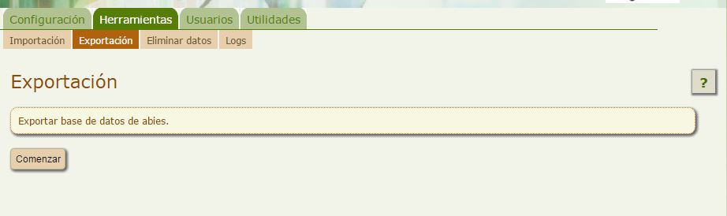

Crear una copia de seguridad
Una tarea que deberemos realizar periódicamente, es la creación de una copia de seguridad, que puede salvarnos de un buen susto, en caso de que tengamos un problema grave con nuestra biblioteca o bien existiera algún error en el sistema que llevara a la pérdida de datos.
Hacer una copia de seguridad es tremendamente sencillo, por lo que se aconseja realizarla una vez por semana, por si llegara el fatídico caso que necesitásemos hacer uso de ella, haber perdido el trabajo, como mucho, de cinco días de biblioteca.
Para realizar la copia de seguridad de nuestra biblioteca nos situaremos en la pestaña Herramientas opción Exportación y allí pulsaremos Comenzar:

Veremos que el proceso de exportación comienza automáticamente y que cuando termina nos presenta un enlace para la descarga del fichero que contiene la copia de seguridad.
Una vez descargado este fichero a nuestro ordenador, lo ideal sería tenerlo guardado en dos ubicaciones diferentes. El mismo pc y una memoria externa, por ejemplo.

Curso para administradores de AbiesWeb por Cristina Martín Bruna bajo licencia Creative Commons Reconocimiento-NoComercial-CompartirIgual 4.0 Internacional License.